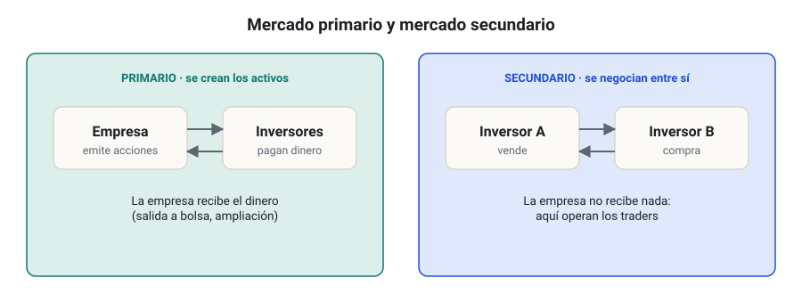
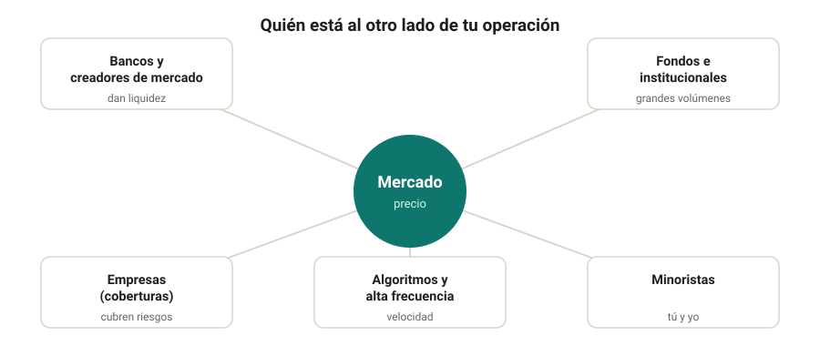
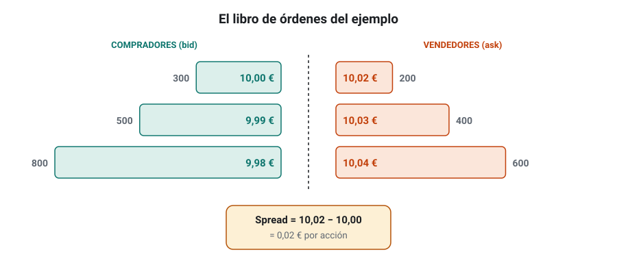
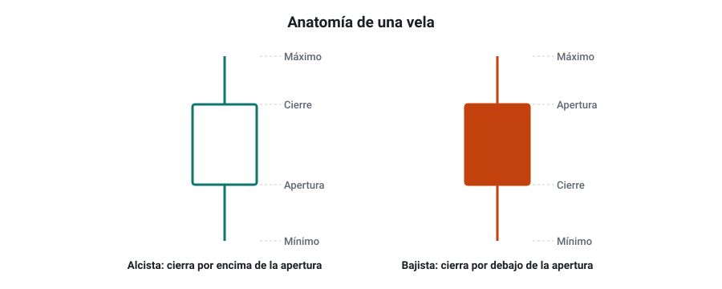
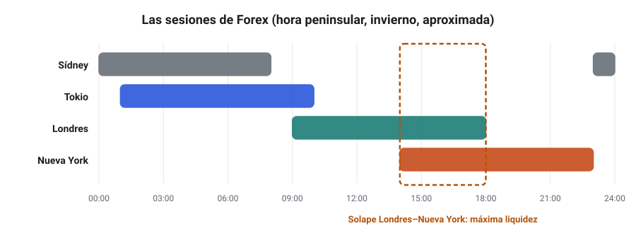
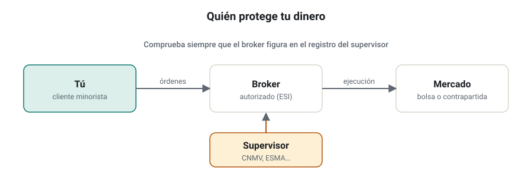
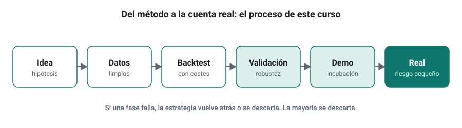
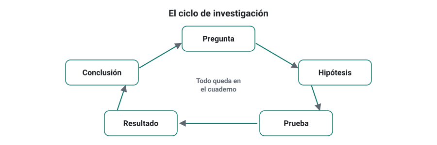

SEMANA 01 · ETAPA 1 · FUNDAMENTOS
Cómo funcionan los mercados
Presentación de la semana
Bienvenido a la primera semana. Antes de construir algoritmos necesitas entender el terreno en el que van a trabajar: qué es un mercado, quién compra y vende en él, cómo se forma un precio y cuánto cuesta operar. Esta semana no necesitas StrategyQuant X ni haber operado nunca.
Objetivos
Al terminar la semana sabrás:
- Explicar qué es un mercado financiero y para qué sirve.
- Identificar a los participantes principales y sus motivos para operar.
- Describir cómo se forma el precio a partir de las órdenes, y qué son el bid, el ask y el spread.
- Explicar la liquidez y la volatilidad, y por qué cambian a lo largo del día.
- Distinguir broker, exchange y supervisor, y comprobar si una entidad está autorizada.
- Explicar qué es y qué no es el trading algorítmico, y los motivos por los que la mayoría de los minoristas pierde dinero.
- Organizar tu estudio con un cuaderno de investigación.
Plan de la semana (22–25 horas)
| Bloque | Horas | Qué harás |
|---|---|---|
| Clases | 6 | Siete lecciones: lectura del manual y vídeos |
| Prácticas | 12 | Ejercicios guiados y la práctica principal: el mapa de un mercado real |
| Investigación y evaluación | 4 | Investigación I-01, entrega y examen |
| Revisión y planificación | 2 | Glosario, cuaderno y plan de la semana 2 |
Un reparto posible: lunes y martes, lecciones 1 a 4; miércoles, lecciones 5 a 7; jueves y viernes, ejercicios y práctica; fin de semana, investigación, examen y revisión.
Qué necesitas
- Un ordenador con conexión a internet.
- Una hoja de cálculo (Excel, LibreOffice Calc o Google Sheets).
- Un cuaderno de investigación, digital o en papel (lección 7).
Criterio para desbloquear la semana 2
Tener en estado APROBADO, con un 80 % o más cada uno:
- ☐ Examen de la semana 1
- ☐ Entrega práctica: el mapa de un mercado real
- ☐ Investigación I-01: pasos 1 a 3 y 8 documentados
Si algún componente queda en SUSPENSO, recibirás la corrección con los errores, las lecciones que revisar y cómo recuperarlo.
Advertencia de riesgo. Operar en los mercados financieros, y en especial con productos apalancados como los CFD, conlleva un riesgo alto de perder dinero. Este curso es formativo: no da recomendaciones de inversión ni promete resultados.
Qué es un mercado financiero y para qué sirve
Formato: clase de 25 minutos · Lectura: 30 minutos
Un mercado es un lugar de encuentro
Un mercado es cualquier lugar, físico o digital, donde se encuentran quienes quieren comprar algo y quienes quieren venderlo. En un mercado de frutas se intercambian naranjas por dinero. En un mercado financiero se intercambian activos financieros: derechos sobre algo que tiene valor, como una parte de una empresa, una deuda o una moneda.
Los activos que estudiarás en el curso son cuatro:
| Activo | Qué compras en realidad | Ejemplo |
|---|---|---|
| Acción (stock) | Una pequeña parte de la propiedad de una empresa | Una acción de una empresa cotizada |
| Divisa (currency) | Una moneda a cambio de otra | Comprar euros pagando con dólares |
| Índice (index) | Un número que resume el precio de un grupo de acciones; se opera con productos que lo replican | El S&P 500, que agrupa 500 grandes empresas de Estados Unidos |
| Criptomoneda (cryptocurrency) | Una unidad digital registrada en una red informática | Bitcoin |
Para qué sirven los mercados
Los mercados financieros cumplen funciones útiles para la economía:
- Financiar: una empresa vende acciones para conseguir dinero con el que crecer.
- Intercambiar: una empresa española que vende en Estados Unidos cobra en dólares y necesita cambiarlos a euros.
- Cubrir riesgos: esa misma empresa puede fijar hoy el tipo de cambio de un cobro futuro para no depender de lo que pase con el dólar.
- Descubrir precios: millones de compradores y vendedores, con información distinta, acaban fijando un precio que refleja lo que el mercado piensa que vale algo.
- Dar liquidez: permiten convertir una inversión en dinero con rapidez.
Mercado primario y secundario
Cuando una empresa emite acciones nuevas y las vende por primera vez, lo hace en el mercado primario. Cuando esas acciones cambian después de manos entre inversores, se negocian en el mercado secundario. El trading ocurre en el mercado secundario: tú no compras a la empresa, sino a otro participante.

Mercados organizados y OTC
- Mercados organizados (bolsas o exchanges): tienen un lugar central, reglas comunes y un registro único de las operaciones. Ejemplo: una bolsa de acciones.
- Mercados OTC (over the counter, «sobre el mostrador»): las operaciones se cierran directamente entre las partes o a través de intermediarios, sin un libro central. Forex es el ejemplo principal: no tiene una sede única.
La diferencia importa para un trader algorítmico: en un mercado OTC, el precio que ves depende de tu intermediario, y dos brokers pueden mostrar precios ligeramente distintos al mismo tiempo.
Un dato para dimensionar
El mercado de divisas es el mayor del mundo: en abril de 2025 movió una media de 9,6 billones de dólares al día, según el Banco de Pagos Internacionales (BIS, 2025).
Comprueba que lo has entendido
- ¿Qué diferencia hay entre el mercado primario y el secundario?
- ¿Por qué dos brokers de Forex pueden mostrar precios distintos en el mismo segundo?
- Pon un ejemplo propio de una empresa que use un mercado financiero para cubrir un riesgo.
Si no puedes responder alguna, vuelve a leer la parte correspondiente antes de seguir.
Quién participa en los mercados
Formato: cápsula de 15 minutos · Lectura: 20 minutos
Cada operación tiene dos lados: alguien compra y alguien vende. Saber quién está al otro lado te ayuda a entender por qué los precios se mueven y por qué ciertos patrones se repiten.
Los participantes principales
| Participante | Qué hace | Por qué opera | Horizonte típico |
|---|---|---|---|
| Bancos centrales | Fijan los tipos de interés y a veces intervienen en su divisa | Estabilidad de precios y del sistema financiero | Meses o años |
| Grandes bancos | Dan precios a clientes y operan entre sí | Servicio a clientes, cobertura y beneficio | De segundos a meses |
| Gestoras y fondos | Invierten el dinero de sus clientes | Rentabilidad a largo plazo, cobertura | Meses o años |
| Empresas | Cambian divisas o cubren riesgos de su negocio | Necesidades comerciales, no especulación | Según su actividad |
| Creadores de mercado (market makers) | Ofrecen precios de compra y venta de forma continua | Ganar la diferencia entre ambos precios | Muy corto |
| Fondos cuantitativos y de alta frecuencia | Operan con algoritmos | Explotar patrones estadísticos | De milisegundos a meses |
| Minoristas (retail) | Particulares que operan con su dinero | Especulación, ahorro o inversión | Muy variable |

Por qué esto importa a un trader algorítmico
- No todos buscan ganar en cada operación. Una empresa que cambia dólares para pagar nóminas compra aunque el precio no le guste. Esos flujos obligados crean movimientos que pueden repetirse, por ejemplo en ciertas horas o fechas del mes.
- Los grandes participantes mueven el precio. Un fondo que necesita comprar una cantidad enorme lo hace poco a poco, durante días. Esta es una de las explicaciones de que las tendencias persistan.
- Compites con profesionales. Los participantes más rápidos y mejor informados son bancos y fondos con recursos muy superiores. Un minorista no puede competir en velocidad: su ventaja posible está en la disciplina, en horizontes que no interesan a los grandes y en el control del riesgo.
Una idea clave: el juego de suma cero
En los derivados, como los CFD y los futuros, lo que gana un lado lo pierde el otro antes de costes. Después de costes, el conjunto de participantes pierde dinero. Por eso una estrategia necesita una ventaja real y medible para ganar a largo plazo: operar por operar te lleva a pagar costes de forma sistemática.
Comprueba que lo has entendido
- ¿Por qué una empresa puede comprar una divisa aunque crea que su precio es alto?
- ¿Qué gana un creador de mercado?
- ¿Por qué un minorista no debería intentar competir en velocidad con un fondo de alta frecuencia?
Cómo se forma el precio: órdenes, libro, bid, ask y spread
Formato: clase de 35 minutos · Lectura: 40 minutos
El precio es el resultado de las órdenes
El precio no lo fija nadie: es el punto en el que se cruzan las órdenes de compra y de venta. Una orden es una instrucción para comprar o vender una cantidad de un activo. Hay dos grandes tipos:
- Orden límite (limit order): «compro como máximo a este precio» o «vendo como mínimo a este precio». Espera en el mercado hasta que alguien la acepta.
- Orden a mercado (market order): «compro o vendo ya, al mejor precio disponible». Se ejecuta de inmediato contra las órdenes límite que esperan.
El libro de órdenes
Las órdenes límite que esperan forman el libro de órdenes (order book). Un ejemplo simplificado de una acción:

| Compradores: cantidad | Precio de compra (bid) | Precio de venta (ask) | Vendedores: cantidad |
|---|---|---|---|
| 300 | 10,00 € | 10,02 € | 200 |
| 500 | 9,99 € | 10,03 € | 400 |
| 800 | 9,98 € | 10,04 € | 600 |
- El bid es el mejor precio al que alguien está dispuesto a comprar: 10,00 €. Si tú quieres vender ya, venderás a ese precio.
- El ask (u offer) es el mejor precio al que alguien está dispuesto a vender: 10,02 €. Si quieres comprar ya, comprarás a ese precio.
- El spread es la diferencia entre ambos: 10,02 − 10,00 = 0,02 €.
Por qué el spread es un coste
Si compras a 10,02 € y vendes un segundo después, sin que nada cambie, venderás a 10,00 €. Has perdido 0,02 € por acción sin que el precio se haya movido. Cada operación paga el spread: es el primer coste del trading.
En porcentaje:
Un 0,2 % parece poco, pero una estrategia que opera 300 veces al año paga ese coste 300 veces.
Cómo se mueve el precio
Supón que llega una orden a mercado para comprar 500 acciones. Consume las 200 disponibles a 10,02 € y 300 de las 400 que hay a 10,03 €. El nuevo ask es 10,03 € y el precio ha subido.
Esto muestra dos ideas importantes:
- El precio sube cuando las órdenes de compra a mercado consumen la oferta, y baja cuando las ventas consumen la demanda.
- Una orden grande puede ejecutarse a varios precios. La diferencia entre el precio esperado y el obtenido se llama deslizamiento (slippage), y es otro coste.
El último precio y las velas
El precio que ves en un gráfico suele ser el último precio negociado o, en Forex, el bid. Los gráficos resumen el movimiento de cada periodo en una vela (candlestick) con cuatro valores: apertura, máximo, mínimo y cierre (open, high, low, close: OHLC). Trabajarás con velas durante todo el curso.

Comprueba que lo has entendido
- Si el bid es 1,0850 y el ask 1,0851, ¿cuál es el spread?
- Con el libro del ejemplo, ¿a qué precio venderías 300 acciones con una orden a mercado?
- ¿Qué diferencia hay entre una orden límite y una a mercado en cuanto a la garantía de precio y de ejecución?
Liquidez, volatilidad y horarios
Formato: clase de 30 minutos · Lectura: 30 minutos
Liquidez
La liquidez es la facilidad para comprar o vender una cantidad sin mover mucho el precio. Un mercado líquido tiene muchas órdenes en el libro, spreads estrechos y poco deslizamiento. Un mercado poco líquido tiene spreads amplios y saltos de precio.
Tres señales de liquidez que verás en la práctica:
- Spread estrecho y estable.
- Volumen alto: muchas operaciones o mucho dinero negociado.
- Profundidad: mucha cantidad disponible cerca del mejor precio.
Volatilidad
La volatilidad mide cuánto se mueve el precio. Un activo volátil recorre mucha distancia en poco tiempo, hacia arriba o hacia abajo.
Una forma sencilla de medirla es el rango de cada vela: máximo menos mínimo. Si el EUR/USD recorre de media 70 pips al día y una criptomoneda recorre un 4 % diario, la segunda es mucho más volátil en términos relativos. En la semana 4 aprenderás a medirla con la desviación estándar y, más adelante, con el indicador ATR.
La volatilidad no es buena ni mala: es oportunidad y riesgo a la vez. Un mismo stop de 20 pips puede ser amplio en una hora tranquila y ridículamente estrecho en una noticia.
Horarios: cuándo se mueve cada mercado
Cada mercado tiene su horario, y la liquidez y la volatilidad cambian mucho dentro del día. Horas peninsulares españolas, orientativas y sujetas a los cambios de horario de verano:

| Mercado | Horario | Momento de más actividad |
|---|---|---|
| Forex | Del domingo por la noche al viernes por la noche, 24 horas | Solapamiento de Londres y Nueva York, aproximadamente de 14:00 a 18:00 |
| Bolsa española (BME) | 9:00–17:30 | Apertura y cierre |
| Bolsa de Nueva York (NYSE y Nasdaq) | 15:30–22:00 | Apertura y última hora |
| Futuros de índices | Casi 24 horas en días laborables, con pausas diarias | Coincidiendo con la sesión de su bolsa |
| Criptomonedas | 24 horas, 7 días a la semana | Variable; suele aumentar con la sesión de Estados Unidos |
En Forex, la actividad se reparte en tres sesiones: Asia (Sídney y Tokio), Europa (Londres) y América (Nueva York). Durante la sesión asiática, los pares europeos suelen moverse en rangos estrechos; con la apertura de Londres llegan el volumen y las rupturas.
Los momentos peligrosos
- Noticias macroeconómicas: datos de empleo, inflación o decisiones de tipos provocan saltos de precio y spreads muy amplios durante minutos.
- Aperturas tras el fin de semana: el precio puede abrir lejos del cierre del viernes. Ese salto se llama gap (hueco).
- Cambio de día y festivos: poca liquidez y spreads amplios.
Un algoritmo que opera a ciegas en estos momentos puede pagar costes muy superiores a los de su backtest.
Comprueba que lo has entendido
- ¿Por qué el spread suele ampliarse cuando hay poca liquidez?
- ¿Qué es un gap y cuándo es más probable?
- Si vives en México, ¿a qué hora local abre la bolsa de Nueva York? Busca el dato y anota la fuente.
Intermediarios y regulación
Formato: clase de 30 minutos · Lectura: 30 minutos
Tres figuras que no debes confundir
| Figura | Qué es | Ejemplo de función |
|---|---|---|
| Exchange o bolsa | El mercado organizado donde se cruzan las órdenes | Registrar las operaciones de acciones o futuros |
| Broker | La empresa que te da acceso al mercado y ejecuta tus órdenes | Abrir tu cuenta, custodiar tu dinero y darte una plataforma como MetaTrader |
| Supervisor | La autoridad pública que autoriza y vigila a los intermediarios | Comprobar que el broker cumple las normas y protege a sus clientes |

En Forex y en los CFD, el broker no siempre envía tu orden a un mercado: a veces es la contraparte de tu operación. Lo estudiarás en la semana 2.
Los supervisores en los países de habla hispana
| País | Supervisor de valores e inversión |
|---|---|
| España | CNMV (Comisión Nacional del Mercado de Valores) |
| México | CNBV (Comisión Nacional Bancaria y de Valores) |
| Colombia | Superintendencia Financiera de Colombia |
| Argentina | CNV (Comisión Nacional de Valores) |
| Chile | CMF (Comisión para el Mercado Financiero) |
| Perú | SMV (Superintendencia del Mercado de Valores) |
En la Unión Europea, un broker autorizado en un país puede ofrecer sus servicios en otros mediante el llamado pasaporte europeo. La ficha fiscal y regulatoria de cada país se estudia en la semana 19.
Cómo comprobar si una entidad está autorizada
- Busca el nombre legal completo de la empresa, no solo su marca comercial.
- Consulta el registro oficial del supervisor de tu país (en España, los registros de la CNMV).
- Revisa también su lista de advertencias sobre entidades no autorizadas.
- Comprueba que la web y el dominio son los que figuran en el registro: los clones de entidades reales son un fraude frecuente.
Las protecciones para minoristas en la UE
Desde 2018, la normativa europea limita los productos más arriesgados para clientes minoristas: apalancamiento máximo en CFD (30:1 en los pares de divisas principales), cierre de posiciones cuando los fondos caen al 50 % del margen exigido, protección frente a saldos negativos y advertencias de riesgo obligatorias (ESMA).
Una de esas advertencias obliga a cada broker a publicar qué porcentaje de sus cuentas minoristas pierde dinero con CFD. Búscala siempre antes de abrir una cuenta: suele ser la mayoría.
Señal de alarma. Si una entidad te ofrece un apalancamiento muy superior al permitido en tu país, garantiza rentabilidades o te presiona para depositar ya, desconfía y comprueba los registros.
Comprueba que lo has entendido
- ¿Qué diferencia hay entre un broker y un exchange?
- ¿Dónde comprobarías si un broker está autorizado en tu país?
- ¿Qué es la protección frente a saldos negativos?
Qué es el trading algorítmico, qué no es y por qué la mayoría pierde
Formato: clase de 40 minutos · Lectura: 40 minutos
Una definición precisa
El trading algorítmico consiste en operar con reglas exactas que un ordenador ejecuta sin intervención humana. Un algoritmo es una lista de instrucciones sin ambigüedad: si dos personas aplican las mismas reglas al mismo gráfico, obtienen exactamente las mismas operaciones.

Una regla algorítmica dice siempre:
- Cuándo entrar: por ejemplo, «compra si el precio cierra por encima del máximo de las últimas 20 velas».
- Cuándo salir: con pérdidas (stop loss), con beneficios (objetivo) o por tiempo.
- Cuánto arriesgar: el tamaño de cada operación.
- Cuándo no operar: horarios, noticias o condiciones de mercado.
El programa que ejecuta estas reglas en MetaTrader se llama asesor experto (Expert Advisor, EA).
Lo que no es
- No es trading de alta frecuencia. Ese negocio exige infraestructura de millones de euros y velocidades de microsegundos.
- No es una máquina de predecir. Ninguna regla sabe qué hará el precio en la próxima operación; busca una ventaja que aparece tras muchas operaciones.
- No es una renta pasiva. Un sistema necesita investigación, validación, supervisión y sustitución cuando deja de funcionar.
- No es comprar un robot. Los robots que «nunca pierden» suelen esconder técnicas que acaban arruinando la cuenta.
La ventaja estadística
Un casino no sabe si ganará la próxima mano, pero sabe que ganará después de miles. Una estrategia útil funciona igual: tiene esperanza matemática positiva después de costes, es decir, el resultado medio por operación es mayor que cero tras pagar spread, comisiones y deslizamiento. En la semana 3 aprenderás a calcularla.
Por qué la mayoría de los minoristas pierde
Las advertencias que la normativa europea obliga a publicar a los brokers muestran que, en la mayoría de ellos, más de la mitad de las cuentas minoristas pierde dinero con CFD. Las causas más frecuentes son conocidas:
| Causa | Qué ocurre | Dónde lo trabajarás |
|---|---|---|
| Riesgo excesivo | Una racha de pérdidas normal destruye la cuenta | Semanas 4, 14 y 19 |
| Costes ignorados | La ventaja desaparece al pagar spread y comisiones | Semanas 2, 5 y 10 |
| Sobreajuste | Un backtest perfecto que falla en real | Semanas 10 a 12 |
| Falta de método | Decisiones impulsivas, sin reglas ni registro | Todo el curso |
| Expectativas irreales | Se fuerza el riesgo para alcanzar objetivos imposibles | Semanas 1, 18 y 19 |
| Intervenir a mano | Se apaga el sistema en el peor momento | Semana 16 |
Este curso no puede cambiar esa estadística. Lo que sí puede es enseñarte a no cometer los errores que la producen.
Expectativas honestas
Desconfía de quien prometa rentabilidades mensuales altas y constantes. Al terminar este curso sabrás investigar, validar y gestionar sistemas; eso no garantiza ganar dinero. La profesionalización es un objetivo de desarrollo a dos años, no una promesa.
Comprueba que lo has entendido
- Escribe una regla de entrada que sea algorítmica y otra que no lo sea, y explica la diferencia.
- ¿Por qué una estrategia necesita esperanza positiva después de costes?
- Elige dos causas de pérdida de la tabla y explica cómo crees que te podrían afectar a ti.
Cómo estudiar este curso
Formato: cápsula de 15 minutos · Lectura: 15 minutos
El método: aprender haciendo
No vas a aprender a investigar mirando vídeos. Cada semana combina un poco de teoría con mucha práctica: el 50 % de tu tiempo está en las prácticas. Las lecciones te dan las herramientas; los ejercicios, la investigación y la entrega te obligan a usarlas.
Tu cuaderno de investigación
Desde hoy llevarás un cuaderno, digital o en papel, que te acompañará las 20 semanas. Es tu registro científico: si algo no está en el cuaderno, no ocurrió. Cada entrada tiene:
| Campo | Ejemplo |
|---|---|
| Fecha | 4 de noviembre |
| Pregunta o hipótesis | ¿En qué horas se mueve más el EUR/USD? |
| Fuentes consultadas | Enlace y fecha de consulta |
| Datos o pasos | Qué hiciste, con qué datos y con qué herramienta |
| Resultado | Lo que obtuviste, aunque no sea lo esperado |
| Conclusión y dudas | Qué aprendiste y qué queda por comprobar |
El ciclo de investigación
Toda investigación del curso sigue ocho pasos: formular una hipótesis, buscar y documentar fuentes, seleccionar datos, diseñar el experimento, generar estrategias, validar, comparar y documentar conclusiones. Esta semana practicarás los pasos 1, 2, 3 y 8.

Cómo usar el tutor de IA
El tutor de IA te ayuda a entender, no a hacer tu trabajo. Úsalo para:
- Pedir otra explicación de un concepto o un ejemplo distinto.
- Comprobar tus razonamientos antes de entregar.
- Preguntar dónde buscar una fuente.
No le pidas las respuestas del examen, ni que haga tu entrega, ni recomendaciones sobre qué operar: no te las dará, porque el curso es formativo y no asesora. Y recuerda que puede equivocarse: comprueba en las fuentes los datos importantes.
Cómo se evalúa
- Cada semana: examen, entrega práctica y avance de la investigación. Cada uno debe llegar al 80 %.
- Los estados posibles son APROBADO, SUSPENSO y NO EVALUABLE (faltan evidencias).
- Un suspenso no es un castigo: viene con los errores concretos, las lecciones que repasar y cómo recuperarlo.
Tu expediente
Tu progreso se guarda en un expediente académico que puedes descargar. Al final de cada semana, guarda también el resumen de progreso: te permite retomar el curso en cualquier momento sin perder el contexto.
Comprueba que lo has entendido
- ¿Qué seis campos tiene cada entrada de tu cuaderno?
- ¿Qué diferencia hay entre SUSPENSO y NO EVALUABLE?
- Escribe tu primera entrada del cuaderno: tus objetivos personales para este curso.
Glosario de la semana
| Término | Inglés | Definición |
|---|---|---|
| Activo financiero | Financial asset | Derecho sobre algo con valor económico: una acción, una deuda, una divisa |
| Acción | Stock, share | Parte de la propiedad de una empresa |
| Algoritmo | Algorithm | Lista de instrucciones exactas y sin ambigüedad |
| Ask u oferta | Ask, offer | Mejor precio al que alguien está dispuesto a vender; al que tú compras |
| Asesor experto | Expert Advisor (EA) | Programa que ejecuta una estrategia de forma automática en MetaTrader |
| Bid o demanda | Bid | Mejor precio al que alguien está dispuesto a comprar; al que tú vendes |
| Broker | Broker | Empresa que da acceso al mercado y ejecuta las órdenes de sus clientes |
| Creador de mercado | Market maker | Participante que ofrece precios de compra y venta de forma continua |
| Deslizamiento | Slippage | Diferencia entre el precio esperado y el obtenido al ejecutar una orden |
| Divisa | Currency | Moneda de un país o zona, como el euro o el dólar |
| Esperanza matemática | Expected value, expectancy | Resultado medio esperado por operación |
| Exchange o bolsa | Exchange | Mercado organizado con reglas comunes y registro central de operaciones |
| Gap o hueco | Gap | Salto del precio entre dos cotizaciones sin operaciones intermedias |
| Índice | Index | Número que resume la evolución de un grupo de activos |
| Libro de órdenes | Order book | Lista de órdenes límite de compra y venta que esperan en el mercado |
| Liquidez | Liquidity | Facilidad para comprar o vender sin mover mucho el precio |
| Mercado OTC | Over the counter | Mercado sin sede central en el que se opera a través de intermediarios |
| Mercado primario y secundario | Primary and secondary market | Primera venta de un activo frente a su compraventa posterior entre inversores |
| Minorista | Retail trader | Particular que opera con su propio dinero |
| OHLC | Open, high, low, close | Apertura, máximo, mínimo y cierre de una vela |
| Orden a mercado | Market order | Orden que se ejecuta de inmediato al mejor precio disponible |
| Orden límite | Limit order | Orden que fija un precio máximo de compra o mínimo de venta |
| Spread | Spread | Diferencia entre el ask y el bid |
| Supervisor | Regulator | Autoridad pública que autoriza y vigila a los intermediarios |
| Trading algorítmico | Algorithmic trading | Operar con reglas exactas que ejecuta un ordenador |
| Vela | Candlestick | Representación gráfica del OHLC de un periodo |
| Volatilidad | Volatility | Medida de cuánto se mueve el precio |
Ejercicios obligatorios
Resuélvelos en tu cuaderno o en una hoja de cálculo, mostrando los cálculos. Se entregan junto con la práctica de la semana.
E1 · Spread. El EUR/USD cotiza con un bid de 1,08500 y un ask de 1,08512. Calcula el spread en unidades de precio y en porcentaje del precio medio.
E2 · Compra a mercado. Con el libro de órdenes de la lección S01-L3, lanzas una orden a mercado para comprar 500 acciones. ¿A qué precios se ejecuta? ¿Cuál es el precio medio? ¿Cuánto has pagado de más respecto a comprarlas todas a 10,02 €?
E3 · Venta a mercado. Con el mismo libro, lanzas una orden a mercado para vender 1.000 acciones. Calcula el importe total recibido y el precio medio.
E4 · El coste de operar mucho. Una estrategia abre y cierra 300 operaciones al año, cada una de 1.000 € de valor, en un activo con un spread del 0,2 %. ¿Cuánto paga al año solo en spread? Exprésalo en euros y en porcentaje de 1.000 €.
E5 · Horarios. La bolsa de Nueva York abre a las 9:30 hora de Nueva York. ¿A qué hora local abre el 15 de diciembre de 2026 en Madrid, Ciudad de México, Bogotá, Buenos Aires, Santiago de Chile y Lima? Cita la fuente que uses para las diferencias horarias.
E6 · Participantes. Indica qué tipo de participante es cada uno y por qué opera:
- Una empresa chilena que importa maquinaria alemana y compra euros.
- Un fondo de pensiones que compra acciones para los próximos 20 años.
- Un banco que publica precios de compra y venta de forma continua.
- El banco central que sube los tipos de interés.
E7 · ¿Algorítmica o no? Indica si cada regla es algorítmica y, si no lo es, reescríbela para que lo sea:
- «Compra cuando el mercado parezca fuerte.»
- «Vende si el precio cierra por debajo del mínimo de las últimas 10 velas de una hora.»
- «Sal cuando ya hayas ganado bastante.»
- «No operes los días de noticias importantes.»
E8 · Gap. Compras 10.000 unidades de EUR/USD a 1,0850 con un stop de venta a 1,0820. El viernes el precio cierra a 1,0850 y el domingo abre a 1,0790. ¿A qué precio aproximado se ejecuta el stop? ¿Cuánto pierdes frente a lo previsto? (La pérdida en dólares es la diferencia de precio multiplicada por las unidades.)
E9 · Liquidez. Un activo A tiene un spread medio del 0,01 % y uno B del 0,5 %. Explica cuál es probablemente más líquido y qué consecuencias tiene para una estrategia que opera muchas veces al día.
E10 · Supervisión. Elige un broker que conozcas o encuentres en internet. Comprueba en el registro oficial del supervisor de tu país si está autorizado y anota el nombre legal de la entidad, el número de registro y la fecha de la consulta. Si no está autorizado, anótalo también.
Investigación I-01 y entrega práctica
Investigación I-01 · ¿En qué horas se concentra el movimiento de un activo?
Esta semana practicas los pasos 1, 2, 3 y 8 del ciclo de investigación. No necesitas programar ni usar StrategyQuant.
Paso 1 · Hipótesis. Elige un activo de uno de los cuatro mercados (por ejemplo, EUR/USD, el índice DAX, una acción o Bitcoin) y escribe una hipótesis concreta y comprobable. Ejemplo: «El EUR/USD recorre más distancia entre las 14:00 y las 18:00, hora de Madrid, que en cualquier otra franja de cuatro horas».
Paso 2 · Fuentes. Busca y cita al menos dos fuentes que expliquen el horario y los momentos de actividad de tu activo. Para cada una, anota quién la publica, la fecha de consulta y por qué te parece fiable o no.
Paso 3 · Datos. Elige una fuente gratuita que muestre velas de una hora de tu activo (por ejemplo, la plataforma web de un broker en demo o una web de gráficos). Durante cinco días laborables, o con los cinco últimos días disponibles, anota para cada hora el rango de la vela (máximo menos mínimo) en una hoja de cálculo. Documenta: nombre de la fuente, zona horaria en la que muestra las velas, si los precios son bid, ask o último negociado y cualquier hueco o dato raro.
Paso 8 · Conclusiones. Calcula el rango medio de cada hora y responde: ¿se confirma tu hipótesis? ¿Qué limitaciones tienen tus datos (cinco días, una sola fuente, zona horaria)? ¿Qué harías para comprobarlo mejor?
Una conclusión que rechaza la hipótesis es tan válida como una que la confirma, si el método es correcto.
Entrega práctica · El mapa de un mercado real
Prepara una ficha de tu activo elegido, de una a dos páginas, con:
| Apartado | Qué incluir |
|---|---|
| Activo y mercado | Nombre, mercado y dónde se negocia (bolsa, OTC, exchanges) |
| Participantes | Quién suele operar este activo y por qué |
| Horario | Horario de negociación en tu hora local y momentos de más actividad, según tu investigación |
| Liquidez y costes | Spread observado en dos momentos distintos del día, con captura y hora |
| Volatilidad | Rango medio diario u horario de tus datos |
| Riesgos especiales | Noticias, gaps, cierres o particularidades del activo |
| Regulación | Quién supervisa a los intermediarios que lo ofrecen en tu país |
| Fuentes | Todas las fuentes, con enlace y fecha de consulta |
Qué entregar
- La ficha en PDF o documento:
CODIGO_S01_ENT. - La hoja de cálculo de la investigación:
CODIGO_S01_INV. - Las capturas del spread, con la hora visible.
- Los ejercicios E1 a E10 resueltos.
Sustituye CODIGO por tu código de alumno.
Cómo se evaluará
La entrega y la investigación se corrigen con rúbricas que valoran la exactitud, el uso de fuentes, la calidad de los datos documentados y la honestidad de las conclusiones. Si falta alguna evidencia, la entrega quedará como NO EVALUABLE hasta que la completes.
Examen de la semana 1 · Variante A
Tiempo orientativo: 60 minutos · Puntuación: 100 puntos · Aprobado: 80 puntos · Puedes usar calculadora, pero no el material del curso ni el tutor de IA. Si suspendes, repetirás con otra variante.
Parte A · Preguntas de opción múltiple (30 puntos, 2 por pregunta)
Elige una sola respuesta.
Parte B · Cálculo (45 puntos, 15 por ejercicio)
Muestra todos los pasos.
B1. El GBP/USD cotiza con un bid de 1,25300 y un ask de 1,25318. Calcula el spread en unidades de precio y en porcentaje del precio medio, con tres decimales.
B2. El lado vendedor del libro de órdenes de una acción es: 200 acciones a 50,10 €, 300 a 50,12 € y 500 a 50,15 €. Compras 600 acciones con una orden a mercado. Calcula el importe total, el precio medio por acción y el sobrecoste total respecto a comprar las 600 a 50,10 €.
B3. Una estrategia hace 200 operaciones al año, cada una de 2.000 € de valor. Paga un spread del 0,05 % del valor y una comisión de 1 € por operación. Calcula el coste total anual.
Parte C · Razonamiento (25 puntos)
En un máximo de 250 palabras: explica tres causas por las que la mayoría de los minoristas pierde dinero y, para cada una, qué hábito o herramienta concreta usarías para evitarla. Tu respuesta debe distinguir entre lo que depende del mercado y lo que depende de ti.